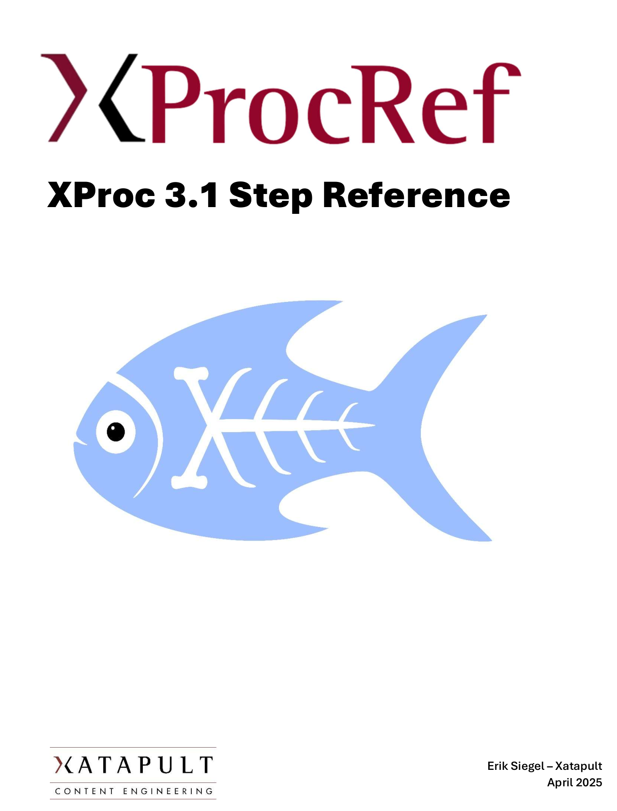

The contents of the XProcRef site (latest XProc version only) is available as a PDF. You can view/download it here.
For those that prefer reading from paper, a printed and bound version is for sale:

Send me a mail (erik@xatapult.nl) and I'll get it to you. Costs are €30 + shipping costs (depending on where
you reside in the world).